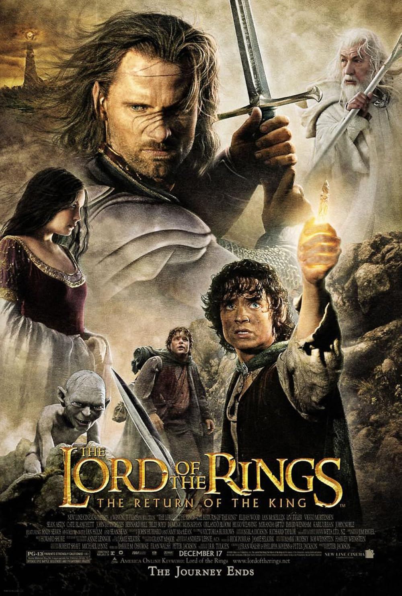

The Lord of the Rings: The Return of the King (2003) is the epic conclusion to Peter Jackson’s fantasy trilogy, bringing the struggle for Middle-earth to a massive and emotional finale. The film follows the final battle against Sauron while Frodo and Sam complete their dangerous journey to destroy the One Ring. It balances huge war sequences with quieter, emotional moments of friendship, sacrifice, and endurance. It’s praised for its scale, visual effects, and powerful storytelling, especially its multiple climaxes that tie together long-running character arcs. With sweeping cinematography and a deeply satisfying resolution, it’s widely regarded as one of the greatest fantasy films ever made and a landmark in cinematic storytelling.
